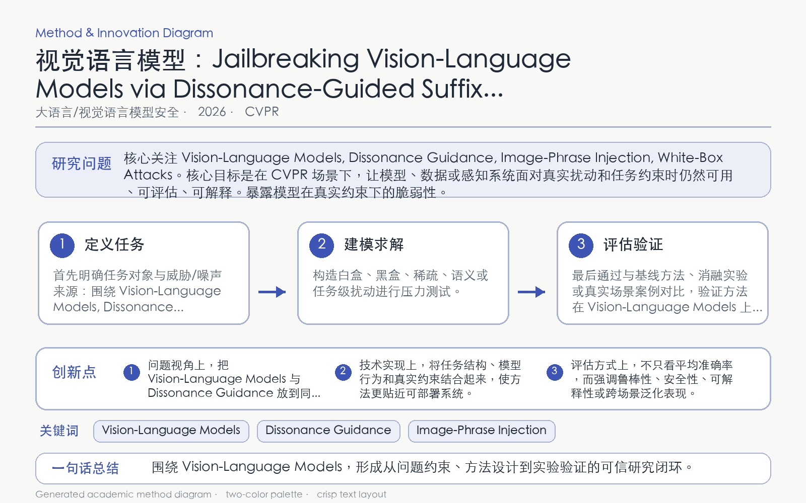

Problem
解决的问题
VLM 同时接收图像和文本，攻击面比纯文本 LLM 更大。已有后缀优化方法在离散 token 空间中容易陷入局部最优，图像扰动方法跨模型迁移性又较弱。
Research on LLMs and VLMs · 2026 · CVPR
Jailbreaking Vision-Language Models via Dissonance-Guided Suffix Optimization and Image-Phrase Injection
Problem
VLM 同时接收图像和文本，攻击面比纯文本 LLM 更大。已有后缀优化方法在离散 token 空间中容易陷入局部最优，图像扰动方法跨模型迁移性又较弱。
Value
这篇论文展示了多模态安全的关键差异：攻击不只发生在文本，也可以利用图像里的可读语义和模型跨模态融合机制。
Generated Method Diagram
该图基于论文标题、主题关键词与中文解读内容重新绘制，用统一的学术信息图风格概括研究问题、技术路线和创新点。相比原始 PDF 页面截图，它更适合网页展示和汇报讲解。
打开原文 PDF
Technical Route
Innovation